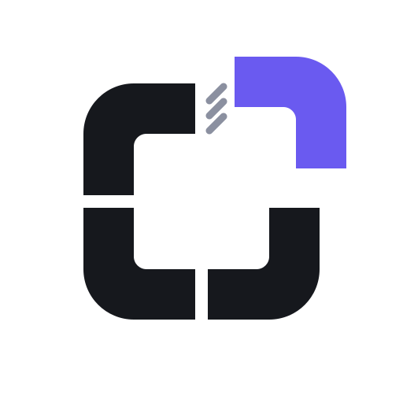
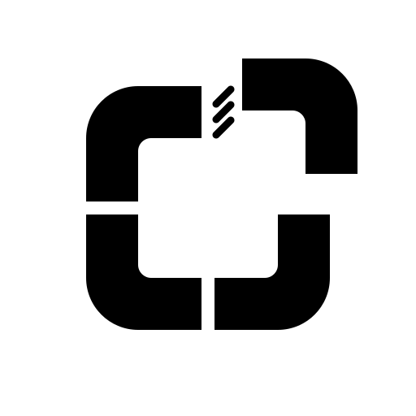

omagnet is Magnet-style window snapping for Omarchy floating workspaces. The mark: four rounded corners form a ring, and one of them (violet) has just clicked into place. Plain, exact, small.
1. The mark
App icon (dark tile). Files: icon.svg, icon-*.png

Glyph on dark: glyph.svg

Glyph on light: glyph-light.svg

One colour: stencil.svg, stencil-white.svg
64, 32, 16 px. Below 64 px use icon-small.svg (no ticks, wider gap)
2. Palette and contrast (WCAG, computed from the hex values)
Ground
#16181dDark background, icon tile14.5:1 on #e8e6ff (AAA)
Ink light
#e8e6ffPale ring and text on dark14.5:1 on #16181d (AAA)
Violet
#8b7bffThe displaced quarter, the o, accents on dark5.4:1 on #16181d (AA)
Tick
#6b7080Three small ticks (decoration only)3.6:1 on #16181d (graphics only, not body text)
Paper
#f4f3f0Light background16.0:1 on #16181d (AAA)
Ink dark
#16181dRing and text on light16.0:1 on #f4f3f0 (AAA)
Violet deep
#6a5af0Violet on light backgrounds4.4:1 on #f4f3f0 (graphics only, not body text)
Muted
#5b5f6eSecondary text on light5.7:1 on #f4f3f0 (AA)
Body text uses Ink and Muted (AA or better). Violet and the ticks are graphic colours: 3:1 is the bar for graphics, so never set body text in them. The ticks are decoration, never the only carrier of meaning. No gradients, shadows or glows in the mark.
3. Type
JetBrains Mono
Bold for headings, regular for body. It is Omarchy's own default font (SIL OFL licence), so the project looks at home on the desktop it targets. Fallback: any monospace.
The wordmark omagnet is drawn as vector strokes, not set in a font. Always lowercase, one word, the o in violet. Say it "oh-magnet".
4. Spacing and shape
Base unit 8 px. Card padding 8% of the width, gaps 16 or 24 px.
Clear space around the mark: the width of one ring arm (1/8 of the glyph width) on every side. Keep it at least that, more is fine.
Minimum size: 16 px for the icon (small variant), 96 px wide for the lockup.
Rounded corners everywhere, like the mark: tile radius 19% of its width, chips 10 to 14 px.
5. Do and do not
Use the dark icon tile for app and avatar slots, the glyph for flat backgrounds.
Use the light-background files on light pages (*-light.*).
Write the name in lowercase: omagnet.
Say "Magnet-style snapping for Omarchy" and keep the not-affiliated line near it.
Keep text short and plain: numbers and key names, not hype.
Recolour the mark, stretch it, rotate it, or add a glow or shadow.
Use Magnet's blue square or tile layout, or Omarchy's logo or green.
Put the dark-ground glyph on a light or busy background (use the light glyph).
Write OMagnet, Omagnet or O-Magnet.
Imply that Omarchy, Magnet or its makers endorse the project.
Use an em-dash or en-dash in any text.
Source: branding/tools (logo.py, kit.py, social.py, sheet.py). Artwork released with the project under MIT. Colours checked 8 pairs.